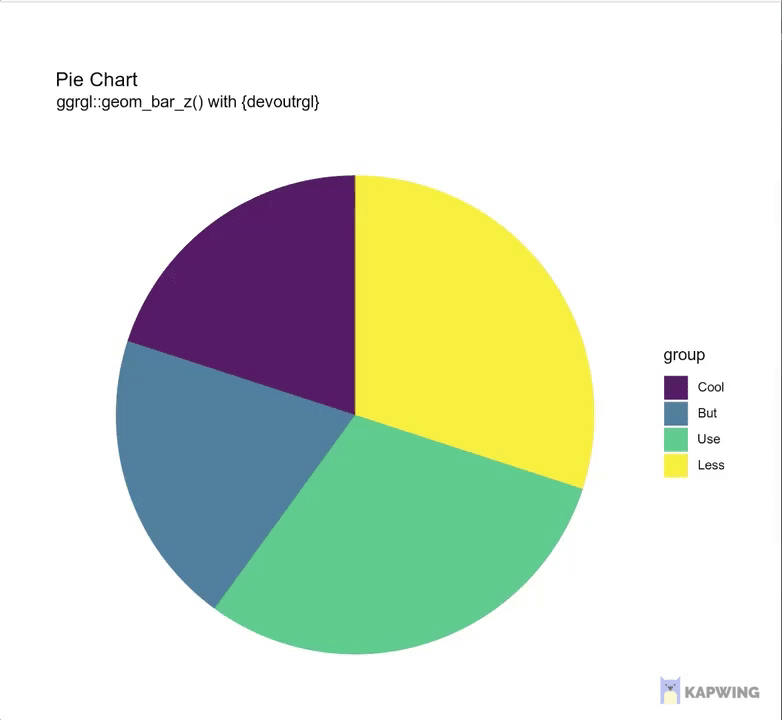

{kind=link}

• 9. Avoid Distractions
Motivating Scenario:
You’re making a figure and remember a cool visualization you saw somewhere — it looked slick, maybe even a little flashy, and you want to try it for your project. Before you dive in, take a step back and ask: Does this visualization actually serve your goals, or are you just doing it because it looks cool?
Learning Goals: By the end of this subchapter, you should be able to:
Recognize common visual distractions by identifying when:
- A figure uses unnecessary 3D effects, animation, or ornamentation.
- A visual format designed for one specific purpose (e.g., a phylogeny or geographic map) is misapplied to unrelated data.
- A figure uses unnecessary 3D effects, animation, or ornamentation.
Spot and avoid flashy but ineffective visuals by:
- Noticing when a figure is overly stylized or prioritizes cleverness over clarity.
- Understanding that unusual or complex formats are rarely the best choice for clear communication.
- Noticing when a figure is overly stylized or prioritizes cleverness over clarity.
Make intentional design choices by:
- Asking whether each visual element helps communicate your message.
- Choosing simplicity, readability, and function over novelty or aesthetics.
- Asking whether each visual element helps communicate your message.
Think critically about data visualization “rules” by making intentional choices - even when they break the rules - based on your goals and audience.
Good Figures Avoid Distractions

Buckminster Fuller aimed to be “invisible,” letting his ideas, not his appearance, speak. This principle, which underlies the name of my favorite podcast on design, 99% Invisible. The same principle applies to figures A good figure calls attention to patterns in the data, not to itself.
Just because you found an R package to make a Sankey diagram or a 3D bar chart doesn’t mean you should use it. Good data viz starts with a question and ends with a design that answers it, not the other way around. Before (or more realistically, halfway through) making an overly complex plot think, WWIMS (“What Would Ian Malcolm Say?” Figure 1), and ask yourself:
- What is the viewer supposed to learn?
- Is this visual emphasizing the right relationships?
- Is there a simpler or more direct alternative?
Below I illustrate this principle for common issues in data visualization.
What the duck?

When a graphic is taken over by decorative forms or computer debris, when the data measures and structures become Design Elements, when the overall design purveys Graphical Style rather than quantitative information, then the graphic may be called a duck in honor of the duck-form store, “Big Duck.” For this building the whole structure is itself decoration, just as in the duck data graphic.
Tufte (1983) coined the term ‘duck’ to describe figures that showcase cleverness rather than data. An extreme example is the banana genome paper, where a banana drawing obscures the Venn diagram’s meaning (Figure 3). The image attempts to show gene families shared across three plant genomes, but fails because superimposing this over a cartoon banana is too distracting.
- Resist the temptation to create flashy but ineffective visuals.
- Remember: visuals should prioritize clarity over aesthetics.
Don’t use 3D or animation unnecessarily

3D and animation are only helpful for specific purposes, like showing protein structures or time-lapse data. Unless the data our the audience calls for it, resist the urge to use them otherwise. More often than not, these flashy formats distract from your message and confuse your reader. They make your plot harder to read, harder to interpret, and much easier to ignore(as demonstrated in Figure 4).
Avoid “glass slippers”
A “glass slipper” (Figure 5) is when a visualization designed for one purpose is misapplied elsewhere, leading to confusion. Keep your visual tools fit for purpose. See this fun video from Calling Bullshit if you like.
Lately I've been getting all my best bullshit from promoted tweets. Here from @NexthinkNews, a classic "glass slipper" visualization (https://t.co/09curqq0tU), in which data is shoehorned into a highly specialized and entirely inappropriate format. pic.twitter.com/aYGxBRkHPG
— Calling Bullshit (@callin_bull) March 14, 2019
The examples above are cases of what Tufte called chartjunk – visual elaborations that are not needed to understand the information in the plot. Such additions can distract the viewer, increase interpretation time, or even mislead.
In defense of (occasional) chartjunk
We will soon consider the importance of considering audience when making plots. Such consideration can reveal that there are circumstances in which rules of data visualization are to be broken. Although much derided, chartjunk has numerous benefits:
- Chartjunk can increase long-term memorability of the chart.
- Chartjunk, in the form of semantically meaningful icons, can increase accessibility of charts for people with Intellectual and Developmental Disabilities.
So if you’re working on a serious plot for a scientific publication, avoid chartjunk. But if you’re aiming to get someone to come to your poster or remember your talk in a day full of seminars, you may find that limited and tasteful “chartjunk” is useful.
Who is Tufte? I usually try to avoid centering famous individuals in science or statistics, because these fields are — in reality — massive collaborative efforts. But it’s worth knowing about Edward Tufte, not because he’s a singular genius, but because many widely cited “rules” of data visualization trace back to his book The Visual Display of Quantitative Information (Tufte (1983)).
This work shaped how people think about clutter, ink, and visual integrity and is the Bible of data visualization. But Tufte is a smart person with strong opinions, not a god. So we are allowed to disagree with him. I, for example, think there are times when a little chartjunk can actually help (see above).